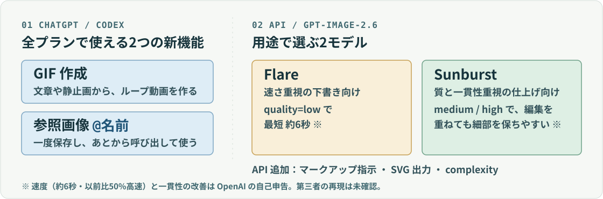

01 / 06 · IMAGE GENERATION
ChatGPT Images 2.6｜GIFと参照画像、
APIは速さのFlareと質のSunburst
OpenAIは11月4日、ChatGPT・Codex・APIにImages 2.6を入れました。ChatGPT側の目玉はGIF作成と参照画像の保存・再利用。API側は、速さのFlareと質のSunburstの2モデルです。
画像を業務で使うエンジニア・PM向け ／ 画像生成も「速さ」と「ブランド一貫」を品質基準で分ける
ONE-PAGE BRIEF ／ どこで何が使えるか

- 01 ChatGPT／CodexGIF作成
- 02 ChatGPT／Codex参照画像 @名前
- 03 API・速さFlare
- 04 API・質Sunburst
02 / 06
何が変わったか：GIF、@参照、2つのAPIモデル
- 01GIF
- プロンプトや静止画から、ループするアニメを作れる。
- 再生速度やコマも編集できる
- 02参照画像
- 一度保存した画像を、あとから@名前で呼び出せる。
- 毎回アップロードしなくてよい
- 03Flare（API）
- 速さ重視。quality=lowで最短約6秒。
- OpenAIの自己申告
- 04Sunburst（API）
- medium／high品質で、編集を重ねても細部を保ちやすい。
- OpenAIの自己申告
- 05API追加
- 画像へのマークアップ指示、SVG出力、complexity（計画量）パラメータ。
- docsに記載
ChatGPTとCodexでは全プランで使えます。OpenAIは、Images 2.6の画像生成は以前より50%速いとしています（OpenAIの自己申告）。
03 / 06
エンジニア・PMに効く点：用途でモデルを選べる
速さと一貫性を分けて選ぶ
たたき台はFlare、編集を重ねる仕上げはSunburst。1つのモデルで両方を狙わなくてよくなります。
参照画像で「崩れる」を減らす
ブランドキャラや製品写真を参照画像に固定すれば、毎回アップロードして見た目がぶれる手間を減らせます。
マークアップ編集は「どこを直すか」を絵で示せます。文章だけの修正指示より、レビューの意図が伝わりやすくなります。
04 / 06
崩れる前提：画像AIは「遊び用」ではなくなる
- これまでの前提
- 画像AIは遊び用。プロダクトの見た目の基準までは要らない。
- これから起きること
- 生成が速くなるほど、社外に出す前のチェック（ロゴ・人物・商標・誤情報）がボトルネックになる。
作る速さが上がっても、確認する人の時間は増えません。見た目の基準とチェックの手順を先に決めておく必要があります。
05 / 06
明日やってみる一手：参照1枚から静止画→GIFまで
- 参照画像を1枚だけ保存する製品やマスコットの画像を保存し、同じ@参照で静止画からGIFまで作ってみます。
- 下書きと仕上げでモデルを分ける下書きはFlare＋低品質、最終候補だけSunburst＋中／高品質で試します。
- 公開前の確認ルールを1行足す参照画像の許可範囲と、GIFの動きが誤解を生まないかを人が見る、と決めておきます。
手順は編集部の提案です。
06 / 06
注意と出典：公式の事実と、自己申告を分けて読む
公式で確認できた機能
GIF作成、参照画像の@呼び出し、Flare／Sunburst、マークアップ指示・SVG出力・complexity、ChatGPT／Codexの全プラン提供。
OpenAIの自己申告（第三者の再現は未確認）
以前比50%高速、Flareで最短約6秒、Sunburstの一貫性の改善、週40億枚の画像生成。いずれもOpenAIの記述です。
GIFの安全面では、System Cardが動きに由来するリスクと追加の安全策を明記しています。アップロードした既存GIFの編集はできません（Help）。
- OpenAI「Introducing Images 2.6」（2026年11月4日）GIF、参照画像、Flare／Sunburst、速度の記載。
- ChatGPT release notes（11月4日の項）ChatGPTでの提供範囲。
- Images in ChatGPT（Help）GIFの編集、参照画像、既存GIFの扱い。
- ChatGPT Images 2.6 System CardGIFのリスク、安全策、評価。
- API docs（Image generation）GPT Image 2.6、マークアップ、SVG、complexity。
- @OpenAIDevs のスレッド（11月5日 JST）API向けの2モデルの説明。